醒來發現仍是相當晴朗的天氣∼一片雲都沒有的藍天，和晒的日漸黝黑的皮膚。
環島的時候，三條比較有名的爬山道路，就是北宜、蘇花還有南迴。
騎乘的難度大概是『蘇花﹥南迴≧北宜』，不曉得庇里牛斯山騎起來會有多困難呢？
被蘇花公路折磨過的台灣人，騎環法賽選手都會面目猙獰的路線，應該很有趣吧∼
反正又不趕著騎完一圈，回頭看看遺失的景色也不錯呀∼只是違反常理了一點罷了。
說了也不會有人相信，但昨天夢到了一個連我自己都不太相信他會出現的人。
作家，侯文詠。他說：『哪裡有困難，我們就往哪裡去！』
去爬山吧！去爬山吧！去爬山吧！
雖然知道台灣方面有很多加油跟鼓勵的聲音，但每天早上都要自己給自己鼓勵一下。
保持愉悅的心情，不然連續騎兩個月的腳踏車，真的跟神經病一樣。
FCR1買了一整年，在台灣才騎不超過一千公里，到法國才一個月，已經騎了三千公里。
而且還要繼續騎下去，之前環島完之後，說實話，很厭惡騎腳踏車這項舉動，看到就反感。
其實也蠻擔心環法會騎到一半就沒勁了，但以目前的狀況來說，還在漸入佳境的狀態。
希望騎到阿爾卑斯山的時候，是心情最HIGH的時候∼不然怎麼能騎的過去呢 /_\
哼著歌，收拾行李，去爬山吧∼去爬山吧∼去爬山吧∼
消耗體力前要先補充營養，早餐吃了三種口味的麵包：
百吃不厭的剛出爐牛角麵包
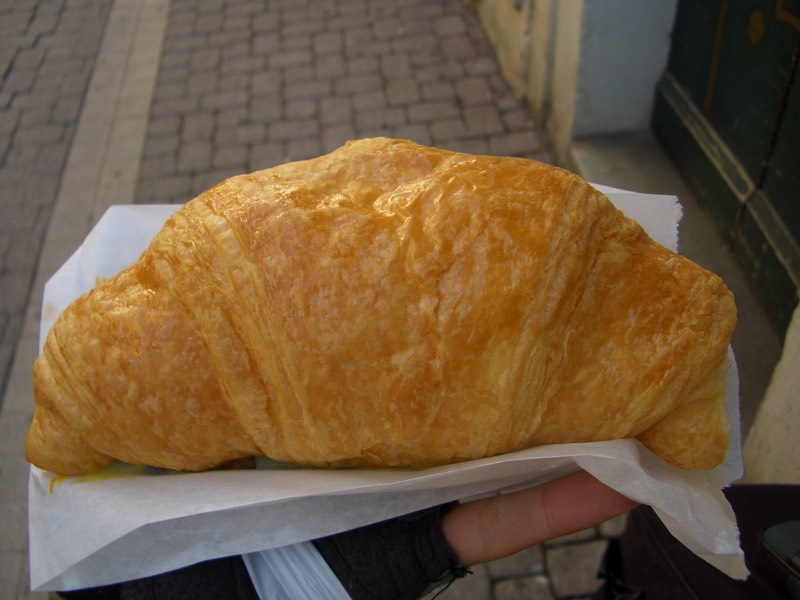
甜甜的奶油麵包
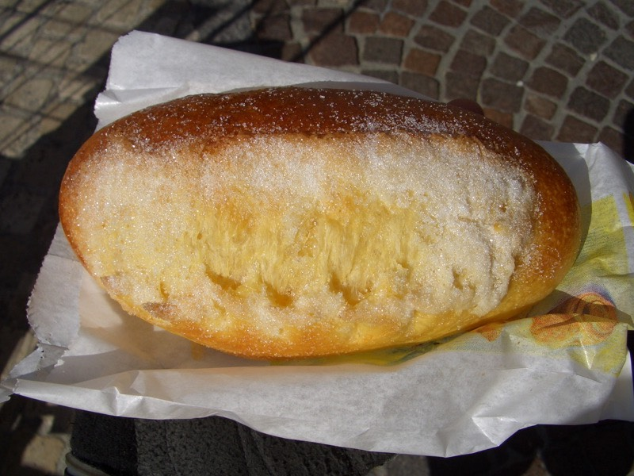
豪華的杏仁片+糖粉+鮮奶油麵包
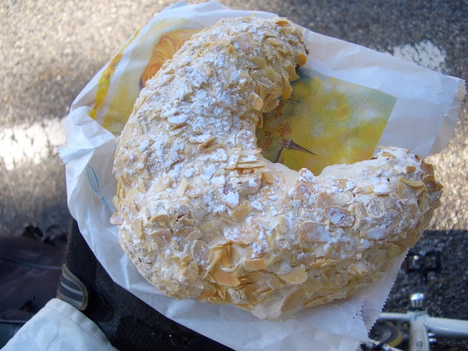
這樣也才花0.74+0.78+1.4=2.92歐元，比在旅館吃那制式早餐要好多了，愛吃什麼口味自己挑。
從土魯斯拿的茶包還剩一個，可以沖泡出大約2000CC的茶水，一路慢慢喝。
今天沿著D117往西邊的方向走，除了些許的爬坡之外，其實沒想像中那麼樣的殘酷。
路上看到蠻多人比大拇指想搭便車，有些一看就不會想理他，有些就感覺很搶手，你不載，後面的人在排隊呢。
像這樣搭便車旅行應該也挺好玩的，只是性格要夠堅強＆隨和才行。
吃光麵包之後，中午的時候到一個叫RIMONT的小地方，有個迷你郵局。
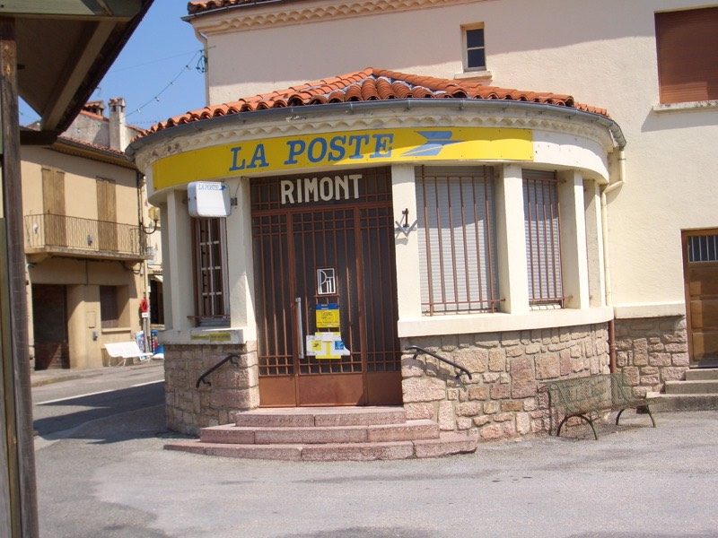
買了四顆番茄當午餐，減肥的時候到了。四顆1.55歐元，折台幣一顆15元。
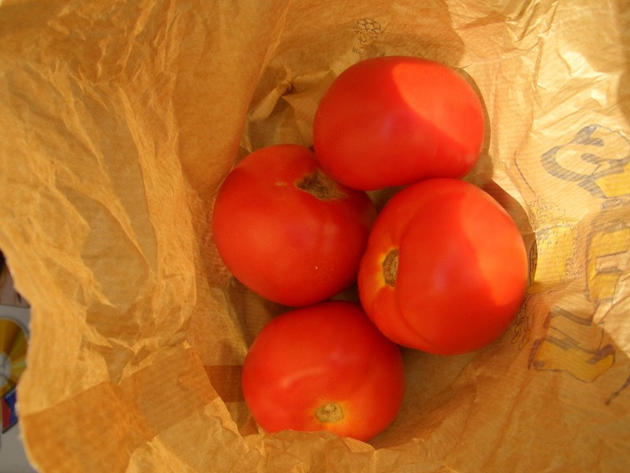
外加半片應該是藍莓餅的甜點，硬邦邦的，吃起來比較有飽足感。3.36歐元。
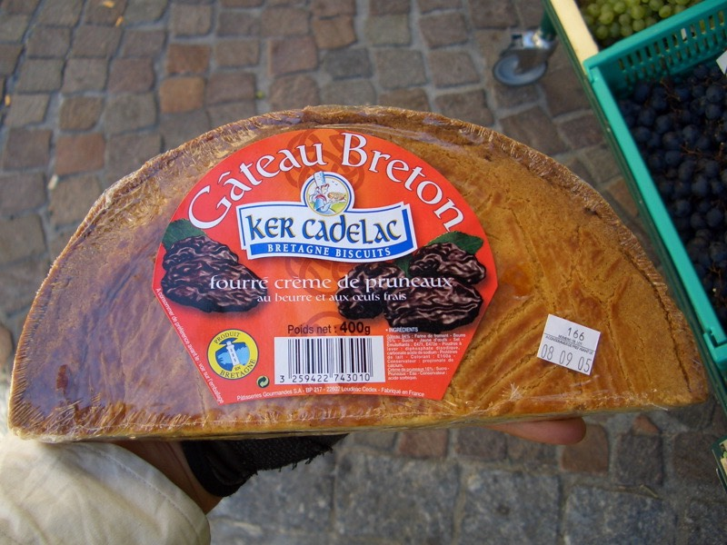
水果攤有賣一種很奇怪的東西，不知道是蔬菜還是水果，有點像是長得很醜的檸檬或是很怪的小黃瓜。
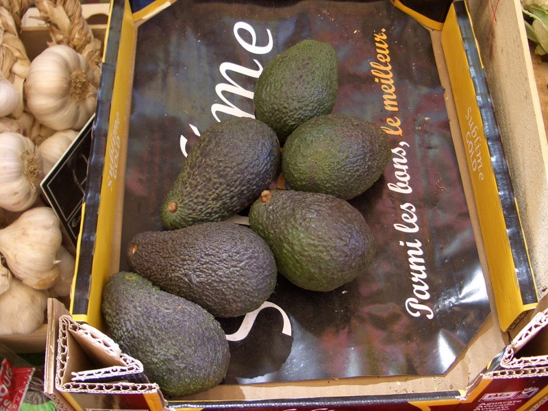
似乎錯過了葡萄酒？沒關係，這一路騎回去，可能又會到波爾多那附近，要多少有多少。那粉紅色的看起來很漂亮∼
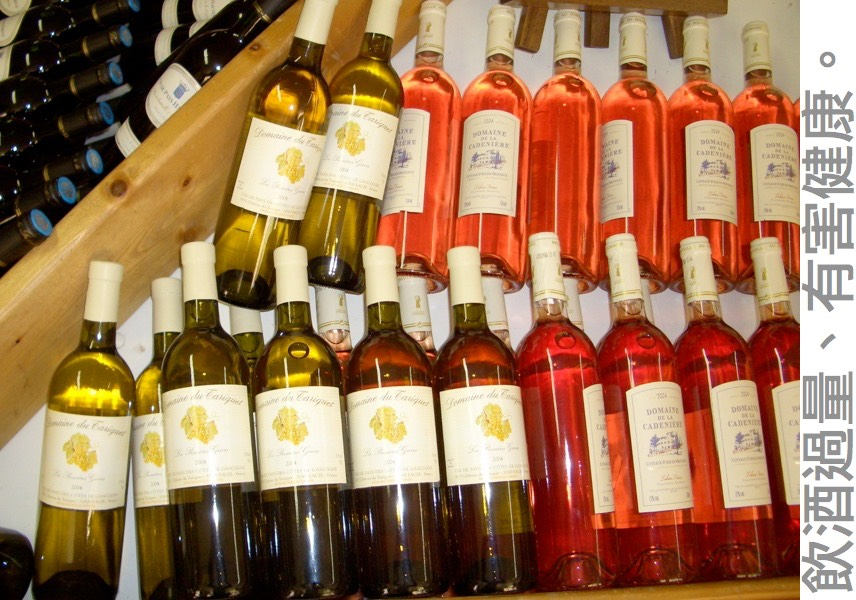
很實用的地圖，真想拆下來扛著走。這邊適合登山、健行、攀岩、打高爾夫、泛舟，嗯....不適合騎車？
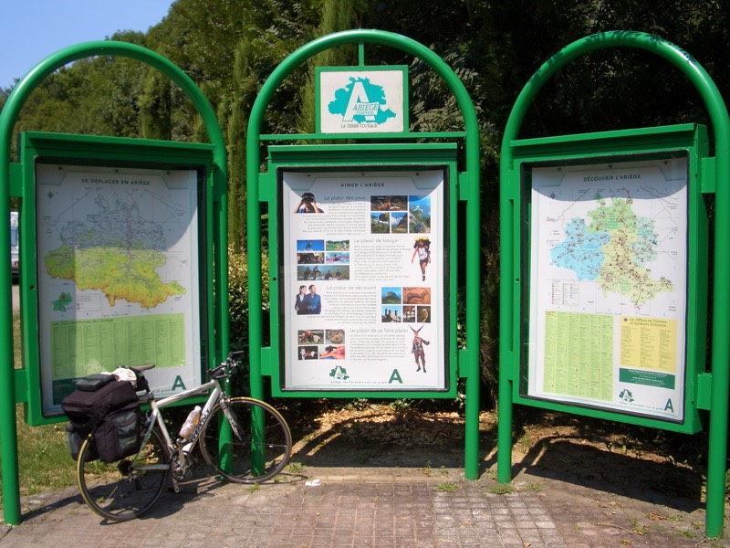
只要是經過的小鎮，都跟山勢結合在一起，房子高高低低的。
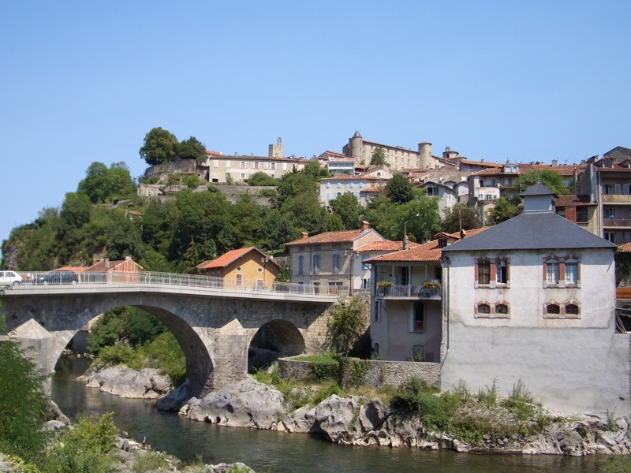
有些簡直就要掉到河裡似的。
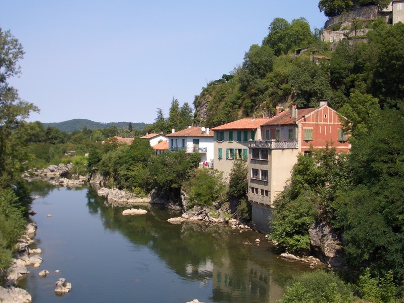
又回想到了環島，那時候兩隻腳老是被自己腳踏車的踏板給撞到，痛的要命，傷口也一大堆。
結果買了新腳踏車，還是一樣動不動就撞那麼一下，舊的傷口結疤都還沒好，馬上又加了一道新傷。
新仇舊恨一起來，看得自己也只能搖搖頭，怎麼這麼不小心呢？
雖然自己不會痛，但別人看起來一定是唉唉叫吧∼
D117走完了，車子都跑到A64高速公路去了，轉小路的時候到了，D21->D26->D21->D5。
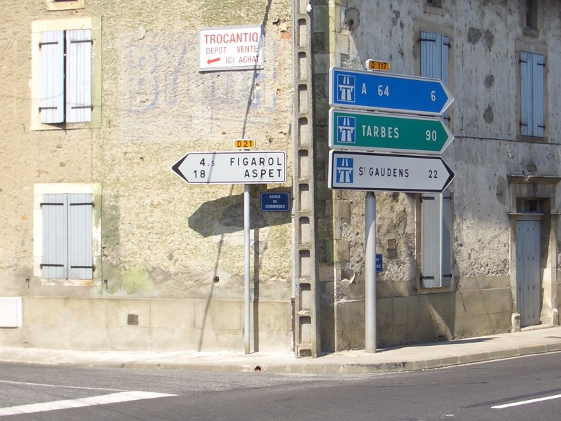
路上有看到賣帽子的地方，一頂登山帽才2歐元。怎麼這麼便宜呀∼少喝一罐汽水就能買帽子擋太陽了。
剛好自己帶來的帽子也弄丟了，要買一頂嗎？旁邊女生戴的，整個帽子上都是小黃花，更便宜，才1.5歐元。
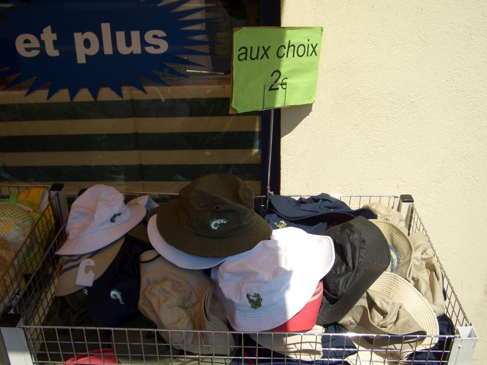
雖然不覺得爬了多高的上坡，但到視野比較好的地方一看。
自己已經在綿延的山勢之中了。
（這張照片點下去可以放大，之後應該會有更漂亮的山勢。）
今天的目標『St GAUDENS』。
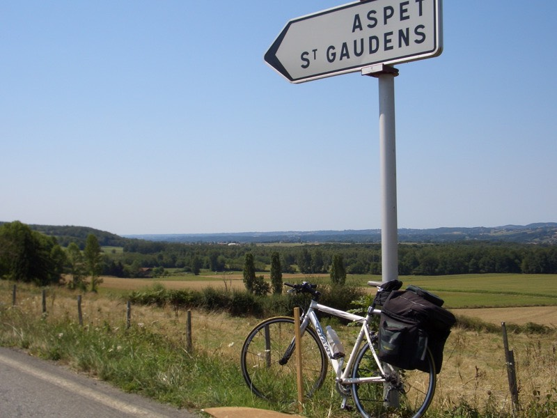
大概四點出頭就到了，里程表還沒到100公里呢，可是爬山跟騎平地不能以相同的標準來衡量。
早點休息也好，明天要去騎瘋狂的D918公路，挑戰一下自己的極限。
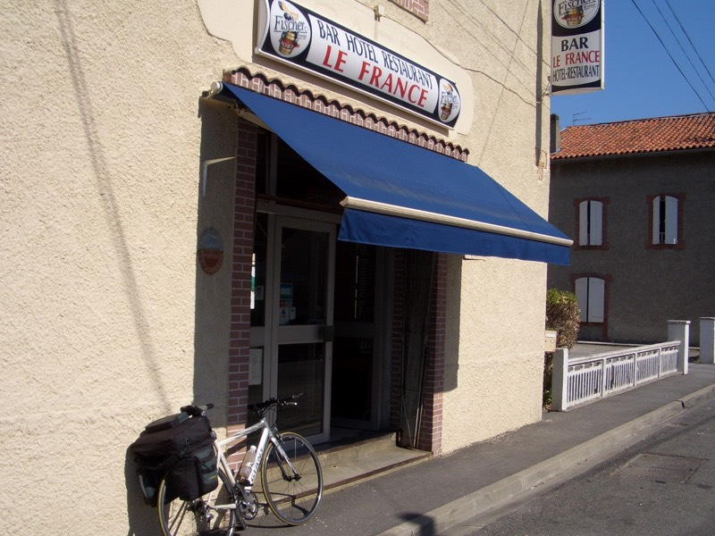
便宜的旅館∼你已經好久都沒有出現了∼
入城前，胡亂找到了一家餐廳+旅館的地方，看價目表是28~42歐元，結果一問之下居然才只要20歐元。
真是不可思議呀！好久沒住到20歐元的旅館了，房間也很舒適∼
只是衛浴跟廁所是公用的，那又有什麼關係呢。住一個晚上，了不起沖一次澡、蹲一次馬桶，幹嘛要專用的。
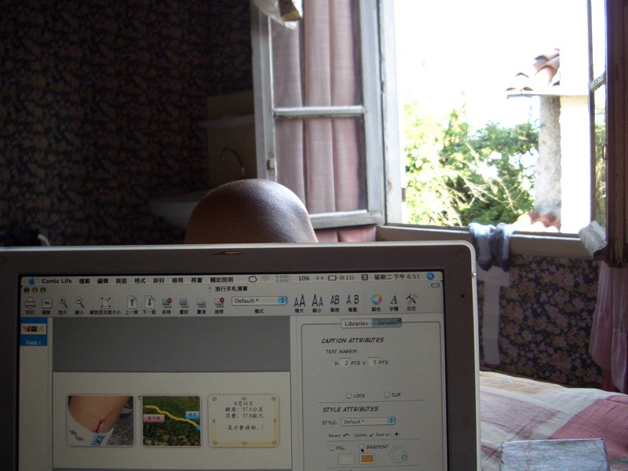
便宜的旅館離市鎮隔著平交道，可以選擇繞一∼∼大圈進城，或是把腳踏車牽上高架橋直接騎進去。
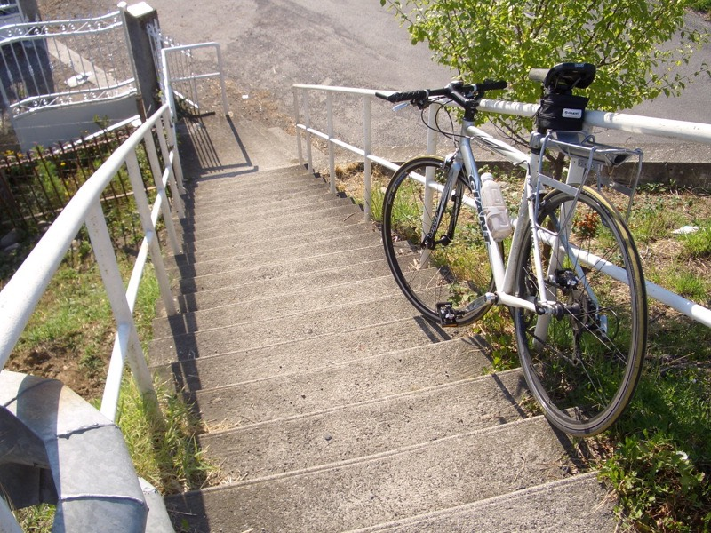
去城裡逛逛，地圖上只是一個小小的地名，居然是個挺大的城市。
雖說是城市參觀，但主要目的還是找網路使用。
現在對於一些教堂類的建築物已經免疫了，理所當然應該會出現的東西，何必大驚小怪。
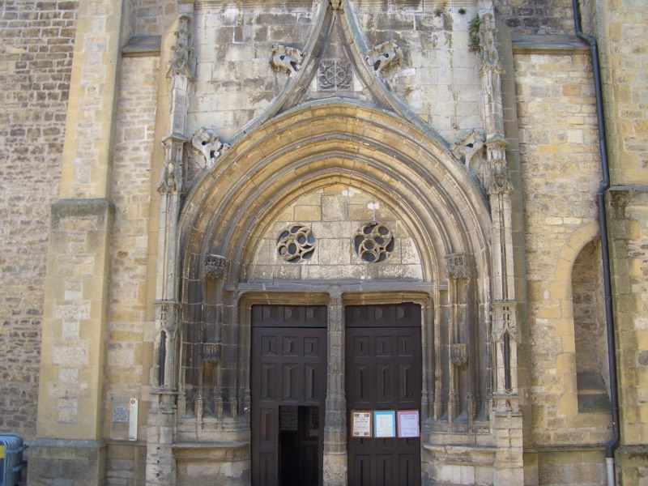
人來人往的街道，這邊比弗瓦還大上許多，大概是離大城近，觀光方便吧，弗瓦實在太偏僻了。
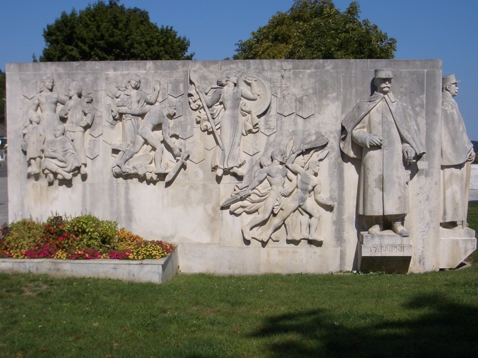
每個網路都要叫我玩猜密碼的遊戲，我怎麼受得了 /_\
真是太不大方了，借用一下又不會怎麼樣......好不容易找到可以用的網路，但是速度不是說很快。
上傳遊記完畢，自己連到網頁去看，居然沒有更新？重新整理、清除快取也都無效。
平常不會這樣子的呀∼蘋果又不知道在搞什麼花樣了？
簡單的計算一下，一篇遊記假設5MB，一天有200個人看過，那就是1GB的流量。
連載一個月遊記，起碼要花上30GB，跟.Mac限制的10GB差太多。
而且這樣的計算方式是非常保守的，理論上的數字應該更多才是，這也還沒加上中文化檔案的發佈。
就常理來看，10GB的流量，大概在八月三日的時候就已經爆掉了，至今網站還能使用，算是蘋果大方？
網路用到下午六點，突然斷訊，可能是網路來源的地方下班了。
那麼就回旅館寫遊記和準備吃飯吧，老闆娘說今天吃的不錯，晚餐10歐元，問我要在這邊吃嗎？
價錢不算貴，希望可以吃到當地的佳肴，大快朵頤一番∼
晚上八點整，下樓用餐去啦 :D 別再搞到九點才上菜，我會暈倒在餐桌上。
這邊的人有些只會講西班牙話，好歹我的法文還會一兩句，西班牙文則完全不行呀 >"<
餐廳沒有所謂菜單這種東西，大家都吃的一樣，只要一就坐，就會開始上菜，
不會因為你是觀光客或是老主顧而吃的有不同。
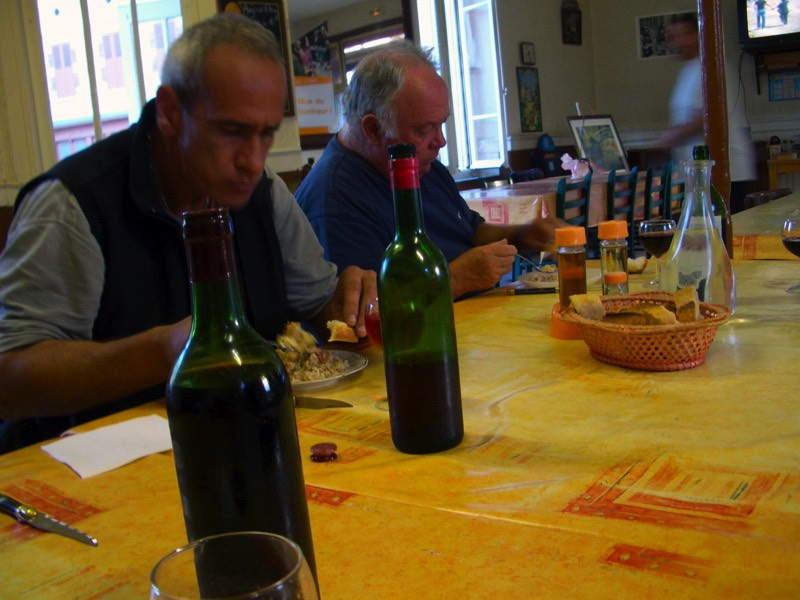
一開始先喝蔬菜濃湯，一大鍋，要喝多少自己舀到盤子裡，無限量供應，配法國麵包吃。
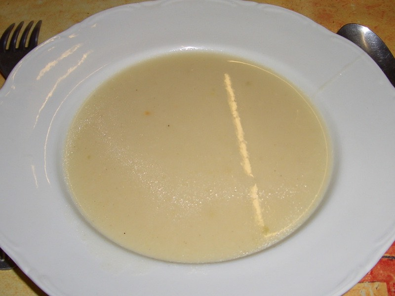
一個人居然有一整瓶的葡萄酒，想說太多了，喝不完吧 /_\ 結果不但整瓶都喝完了，還讓同桌的人請喝酒。
標籤貼的是『VIN DE PAYS DE L'HERAULT』，酒精濃度，11%。
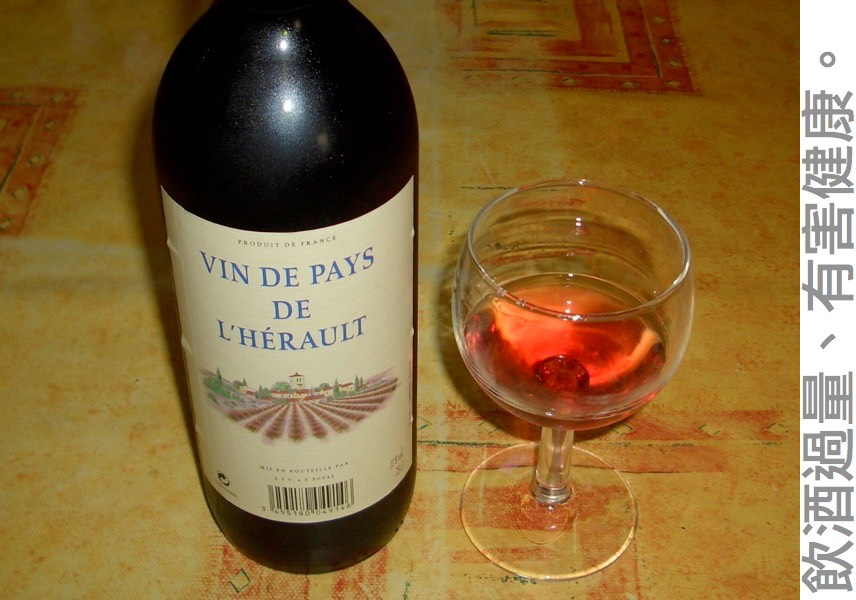
主要的客群感覺是附近工廠剛下班的工人，只要有人一進來，就是全店先打過招呼接著一一握手，很有人情味。
喝了三盤湯之後，接著吃四種口味的香腸！超好吃！
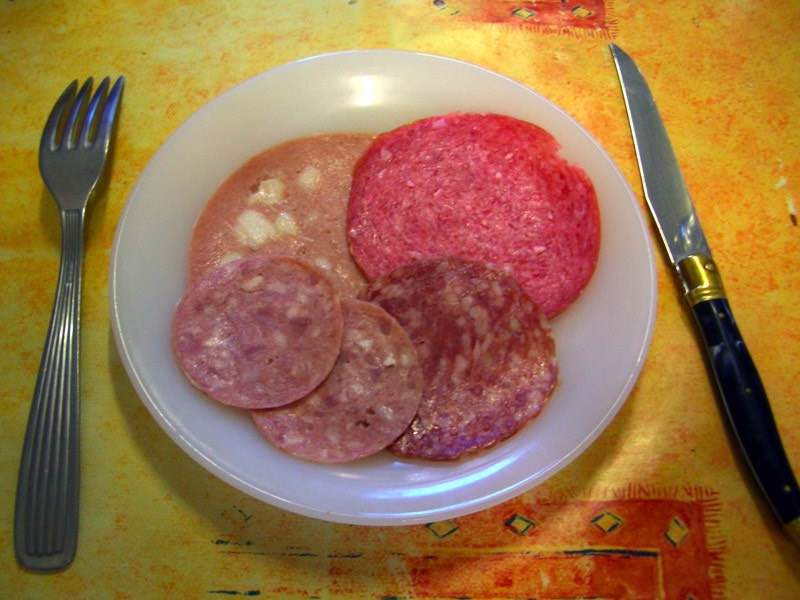
然後吃鮪魚番茄蛋飯，這個居然歸類成沙拉，好好吃 :P 連吃兩盤
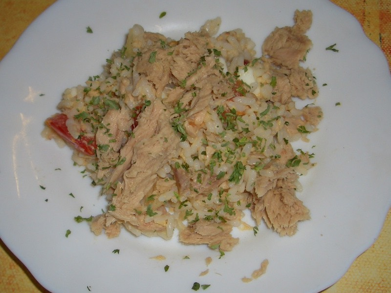
主菜是豬排薯條（也有人吃的是豬排+整盤四季豆）
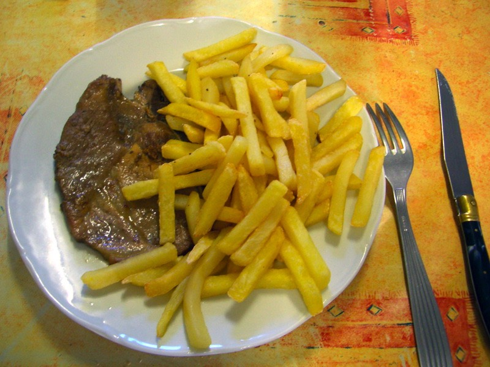
甜點是好吃的乳酪跟巧克力冰淇淋。
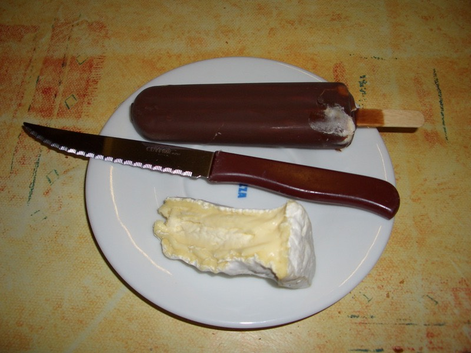
喝光了整瓶的葡萄酒之後，看到店員喝著一杯螢光綠色的飲料，也跟他要了一點點來試喝。
應該是薄荷酒的東西，甜甜的。
老闆娘還附贈了一杯味道很奇特的東西，猛一看以為是冰咖啡，結果是冰咖啡酒。 味道很奇特呀 XD
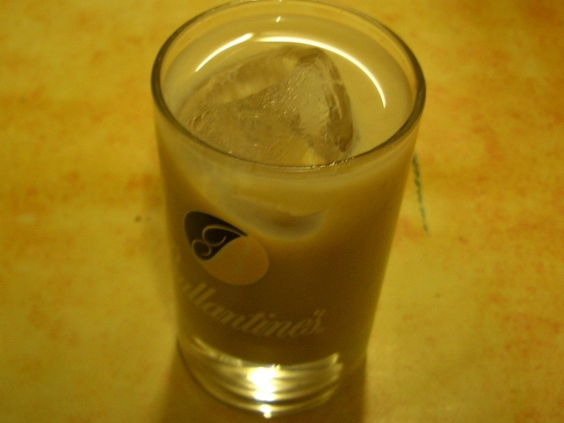
法國西南部。真是個熱情的地方，大家都是一些很好的人 :D
能夠決定爬山真是太好了:)
當地人抽煙都是買煙草，然後自己動手捲，跟電影一樣呢。
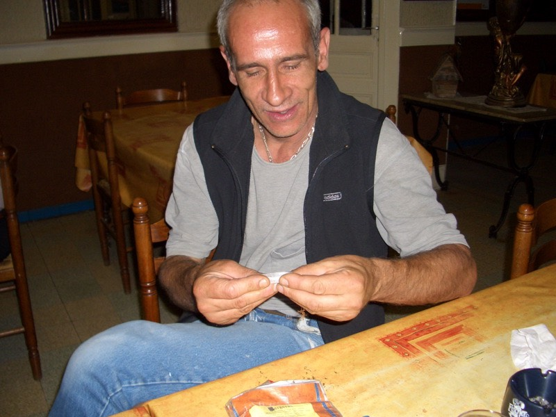
吃飽飯照例要喝杯咖啡，順便醒醒酒。
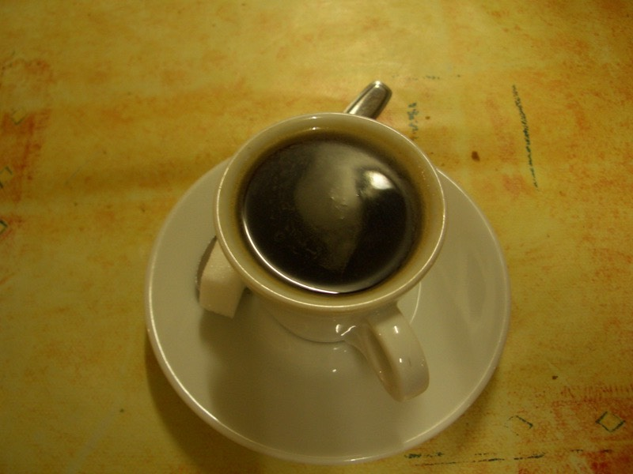
大家一起看我環法的照片，比個大拇指給我 :) 『You are very strong∼！』好開心 *^^*
不知道他們是不是巴斯克人，聽說巴斯克人很偏激，但是他們很可愛，好喜歡這個地方。
葡萄酒也很好喝，不知不覺又喝醉了 ~"~ 還讓別人請喝酒，真是不好意思。
出國三天兩頭就醉上一次，葡萄酒的威力比啤酒或是蘋果酒要猛多了 @@"